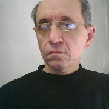

|

|
SPIN GLASSES WITH LONG- AND SHORT-RANGE INTERACTIONSSerhiy SorokovInstitute for Condensed Matter Physics, National Academy of Sciences of Ukraine1. Introduction.Main models (Sherrington-Kirkpatrick, Edwards-Anderson, p-spin spherical model), quantities (spin-glass parameter, overlap distribution function, complexity) and techniques (especially replica trick) used in the spin-glass theory are reviewed. 2. Theory of spin-glasses with infinite radius of interaction. We will consider replica symmetry solution and 1-step replica symmetry breaking for p-spin spherical model. The contribution of metastable states into global equilibrium free energy will be analyzed. We will discuss the structure of energy states and its relation to the ergodic breaking. 3. Theory of spin-glasses with essential short-range interactions. We will review the simulation results for some models with nearest neighbor interaction within the replica symmetry approach and the 1-step replica symmetry breaking. Systems of equations for the distribution functions of static effective fields and linear dynamic susceptibility will be derived and analyzed. The phase diagrams constructed on the basic static and dynamic susceptibility will be discussed. The role of the weak long-range interaction will be illustrated. 4. The proton-glasses of Rb1-x(NH4)xH2PO4–type. The main experimental data (phase diagram, dynamic permittivity) will be reviewed. We will discuss the applicability of some models for description of the proton glasses. Literature : The review article T.Castellani, A.Cavagna. Spin-glass theory for pedestrians// J.Stat.Mech.(2005) P05012, cond-mat/0505032 Main historical references 1. D.Sherrington, S.Kirkpatrick: Solvable Model of Spin Glass. Phys.Rev. Lett. 1975; 35: 1792-1796. 2. S.Kirkpatrick, D.Sherrington: Infinite-Ranged Model of Spin-Glasses. Phys.Rev. 1978; B17: 4384. 3. G. Parisi: The order parameter for spin glasses: A function on the interval 0-1. J. Phys. 1980; A13: 1101-1112. 4. S.F. Edwards and P.W. Anderson: Theory of spin glasses. J.Phys. F. Metal. Phys. 1975; 5: 965-974. Main articles about the spin-glass models with nearest neighbor interaction 1. F.Matsubara and M.Sakata: Theory of Random Magnetic Mixture. III. Glass-Like phase. Progr.Theor.Phys. 1976; 55: 672 2. M. Sasaki, Sh. Katsura. The Distribution Function of the Effective Field of the Ising Spin Glass on the Bethe Lattice for the Coordination Number z=4,5,6. Physica 1989; A155: 206- 220. 3. M. Mezard, G. Parisi. The Bethe Lattice Spin Glass Revisited. Eur.Phys. 2001; B20, 217-233. cond-mat/0009418 v1 27 Sep 2000. 4. F. Liers, M. Palassini, A.K. Hartmann, M. Junger.Ground State of the Bethe-lattice Spin Glass and Running Time of an exact optimization. Phys. Rev. 2003; B68: 094406 (9 pages). Selected articles on proton glasses 1. R. Pirc, B. Tadic, R. Blinc: Random-field smearing of the proton-glass transition Phys. Rev. B. 1987; 36: №16, 8607-8615. 2. Z. Trybula, V.H. Schmidt, J.E. Drumheller. Coexistence of proton-glass and ferroelectric order in Rb1-x(NH4)xH2AsO4 //Phys. Rev. B 43, No.1, p. 1287, (1991). 3. S.I.Sorokov, R.R.Levitskii, A.S.Vdovych. Spin-glass model with essential short-range competing interactions. Condens. Matter Phys. 2005, v.8, N 3(43), p.603-622. Personal webpage |